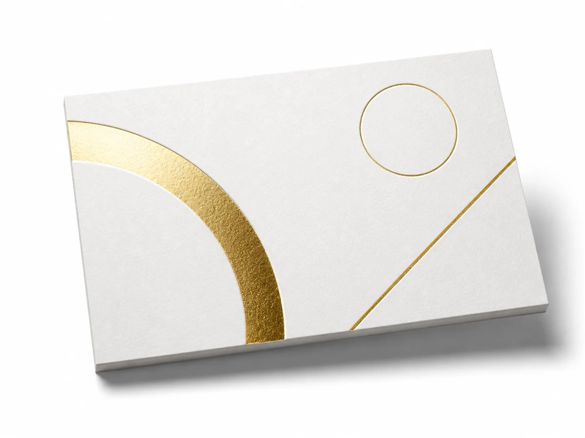

Тиснение фольгой
Делаем горячее тиснение фольгой и блинтовый рельеф: золото, серебро, голография и фактура без краски. Премиальный тактильный акцент для визиток, обложек, упаковки и приглашений.
- Делаем тиснение с клише и без (слепое тиснение)
- Помогаем с дизайном и вёрсткой
- Тиснение можно сочетать с отделкой 3D-лаком, конгревом и ламинацией
- Гарантируем стойкость к стиранию и стабильность цвета

Преимущества тиснения
Премиальный вид
Мгновенно поднимает статус изделия — считывается как «дорого» ещё до прочтения.
Тактильность
Фольгу и рельеф чувствуешь на ощупь. Изделие хочется взять в руки.
Стойкость
Не выцветает и не стирается — эффект держится весь срок службы.
Контраст на тёмном
Металлик ярко работает там, где обычная краска почти не видна.
Виды тиснения
Тиснение фольгой
Горячий перенос металлизированной плёнки. Золото, серебро, голография и цветной металлик — яркий акцент даже на тёмной бумаге.
Конгревное тиснение
Выпуклый рельеф без краски и фольги: изображение выступает над поверхностью и хорошо ощущается на ощупь.
Блинтовое (слепое) тиснение
Рисунок вдавливается в материал без фольги. Сдержанный тактильный эффект тон-в-тон — за счёт фактуры и теней.
Эффекты комбинируются: например, конгрев с фольгой даёт объём и блеск одновременно. Подберём вид под изделие, материал и бюджет.
Рассчитайте стоимость тиснения
Примерная стоимость и сроки
Онлайн-калькулятор тиража
Рассчитайте свой тираж за 1 минуту в нашем калькуляторе
Портфолио
Вертикальные ролики со съёмок и процесса — как выглядит тиснение в движении.
Каждая работа — материал, вид фольги и тираж. Похожий проект рассчитаем по вашему макету.
Требования к макету
Проверьте макет перед отправкой
Готовые материалы
Скачайте и соберите макет без ошибок
Частые вопросы
Чем тиснение отличается от печати золотой краской?
Тиснение — это перенос металлизированной фольги под давлением и температурой. В отличие от краски, оно даёт настоящий металлический блеск, рельеф и стойкость к истиранию.
Какой минимальный тираж?
От 50 штук. На меньших тиражах стоимость за штуку выше из-за подготовки штампа.
Нужен ли отдельный макет под фольгу?
Да. Зону тиснения выносят отдельным слоем и заливают плашкой 100% Magenta или spot-цветом. Мы пришлём шаблон.
Можно ли совместить фольгу и конгрев?
Да, фольга и конгрев выполняются в один прогон — получается объёмный блестящий элемент.
На каких материалах делается тиснение?
Лучше всего на дизайнерской бумаге и картоне от 250 г. Подойдём к выбору материала под ваш проект.
С чем сочетается тиснение
Эти виды отделки комбинируют с тиснением в одном изделии. Нажмите, чтобы открыть технологию.
Отзывы
«Заказывали визитки с золотым тиснением для ребрендинга агентства. Менеджер помог довести макет: подсказал вынести зону фольги отдельным слоем и предложил дизайнерский картон плотнее, чем мы планировали. Первый тираж согласовали по цветопробе, второй — уже без правок. Визитки выглядят дорого, клиенты сразу отмечают тактильность и блеск. Сделали точно в срок, курьер привёз в офис. Обязательно вернёмся за следующими партиями и рекомендуем коллегам.»
«Обложки каталога с конгревом и фольгой — уровень полиграфии супер. Помогли довести макет.»
«Упаковка с серебряным тиснением — именно то, что нужно премиум-линейке. Рекомендую.»
«Приглашения на открытие: блинт плюс фольга. Гости забирали конверты на память.»
Рассчитайте свой тираж за 1 минуту
Оставьте заявку — подберём вид тиснения, материал и рассчитаем стоимость под ваш проект.
Отвечаем в рабочее время за 15 минут. Заявка ни к чему не обязывает.
Как это будет
- Присылаете макет или описываете задачу словами
- Считаем стоимость и присылаем расчёт в течение часа
- Согласуем образец до печати тиража